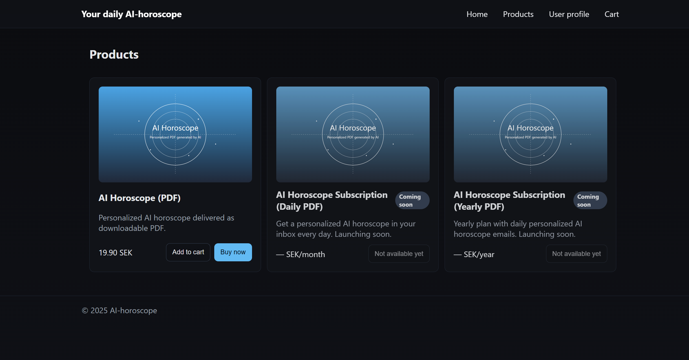

Projekt
En webbapplikation som hjälper undervisande personal och
studerande att skapa och genomföra quiz på ett modernt och
lättanvänt sätt. Projektet kombinerar AI-stöd med en tydlig
struktur så att användare snabbt hittar rätt.
- Frågeordning kan väljas: i ordning, baklänges eller slumpad.
- Vid fel svar visas knappen ”Förklara med AI”; en AI-genererad förklaring kan begäras för att tydliggöra varför rätt alternativ är rätt.
- Felbesvarade frågor återkommer senare i frågelistan på ett slumpmässigt index (10–15) för repetition.
- Text-till-quiz-verktyg: text kan matas in och quizfrågor genereras automatiskt, med språkalternativ och sparfunktion.
- OCR-stöd finns: text kan läsas från fotade eller uppladdade bilder (t.ex. en boksida) och användas för att skapa nya quizfrågor.
Läs mer om projektet
Öppna repot på Github

Ett e-handelssystem där beställningar, produkter och kunddata
hanteras av var sin tjänst men samarbetar sömlöst. Målet är att
visa hur en större lösning kan delas upp för att bli lättare att
underhålla.
- Orderflöden följs upp med korrelations-ID så att varje steg kan spåras mellan mikrotjänsterna.
- Felmeddelanden levereras som ProblemDetail-svar för att ge tydlig återkoppling till klienter och övervakning.
- JWT-baserade anrop valideras i varje tjänst innan data lämnas ut till användare eller andra system.
- Digitala produkter levereras automatiskt efter köp genom ett entitlements-flöde som integreras med användartjänsten.
- Tjänsterna orkestreras i Docker Compose så att hela systemet startas och uppdateras med ett kommando.
Läs mer om projektet
Öppna repot på Github

Ett kommande examensarbete där moderna integrationer mellan AI-tjänster, kryptoteknik och community-plattformar utforskas. Fokus ligger på skalbar backend i Java med Spring Boot och hur realtidsdata kan göras användbart i olika kanaler.
- Planeras att kombinera AI-drivna rekommendationer och externa API:er.
- Målet är att skapa ett demonstrationsprojekt som visar upp integrationer för framtida arbetsgivare.
Läs mer om projektet
Detaljer publiceras vid projektstart
Profil
Jag heter David Andreasson och studerar till Javautvecklare – Integration vid Campus Mölndal.
Jag gillar att bygga system som hänger ihop, där olika delar kommunicerar sömlöst genom välbyggda API:er och smarta integrationer.
Under utbildningen har jag fått arbeta med Java, Spring Boot, REST API:er, databaser och Docker, men också med testning, CI/CD och molnlösningar.
Jag trivs när jag får bygga välstrukturerade lösningar, förstå hur systemen hänger ihop och skapa tydliga flöden mellan dem.
Jag har en bakgrund utanför IT-branschen, vilket har gett mig både arbetsvana, struktur och problemlösningsförmåga. Det gör att jag tar mig an utveckling med samma inställning som allt annat jag gör, jag vill förstå på djupet och leverera något som fungerar på riktigt.
Just nu fokuserar jag på att fördjupa mig i backend-utveckling, integration och automatisering, och mitt nästa mål är att hitta en LIA-plats där jag kan bidra med mina kunskaper inom Java, Spring Boot och systemintegration, samtidigt som jag får möjlighet att utvecklas vidare i en professionell miljö.
LIA & karriärmål
Under våren 2026 ska jag genomföra min LIA (Lärande i arbete), och mitt mål är att hitta en plats där jag får utvecklas inom backend och systemintegration, gärna med fokus på API:er, mikrotjänster och flöden mellan system.
Jag har arbetat mest med Java och Spring Boot, men är öppen för andra tekniska miljöer där jag kan bidra med samma strukturerade och lösningsorienterade arbetssätt. I första hand söker jag en roll inom integrationsutveckling med Java, men jag är lika intresserad av backendutveckling i Java eller integrationer i andra språk, till exempel C#.
Kort sagt: mitt mål är att få arbeta med backend eller integrationer, oavsett språk, så länge jag får bygga välstrukturerade lösningar, fortsätta att utvecklas och lära mig nya tekniker och bidra till något som ger nytta åt människor och används i praktiken.